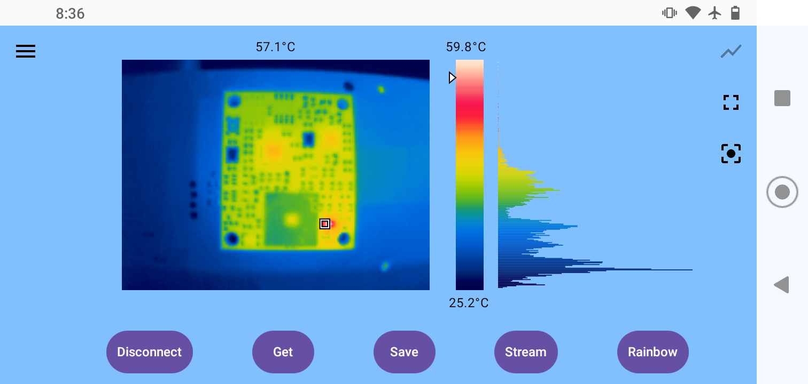
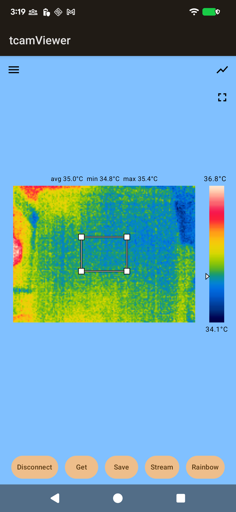
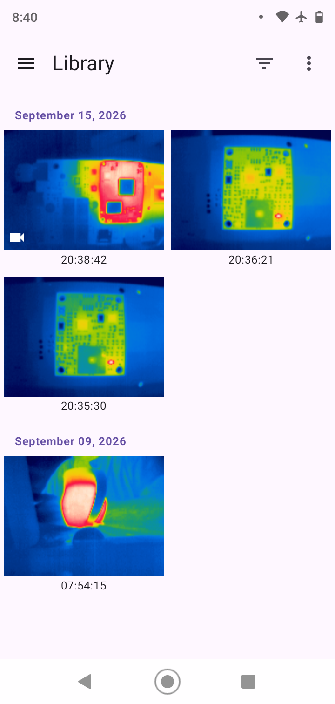
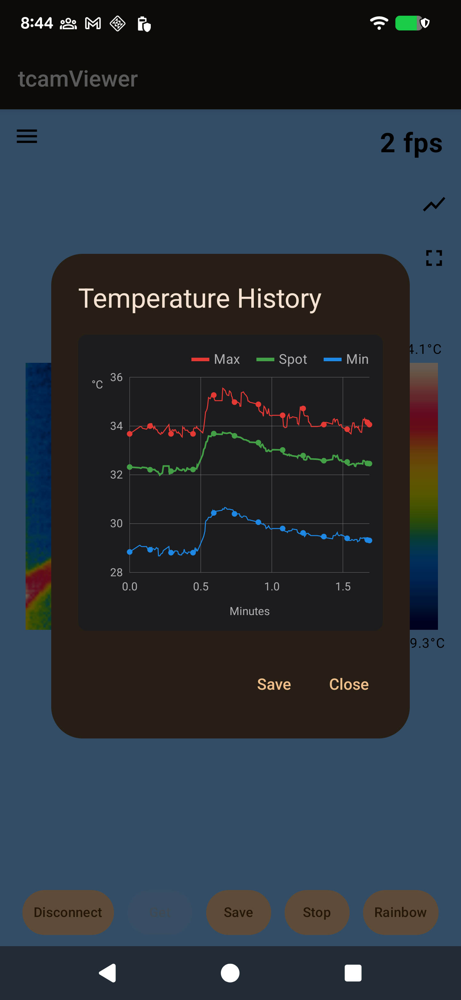
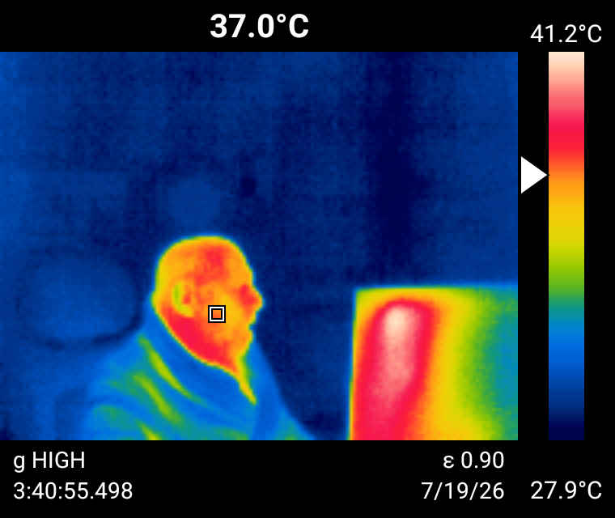
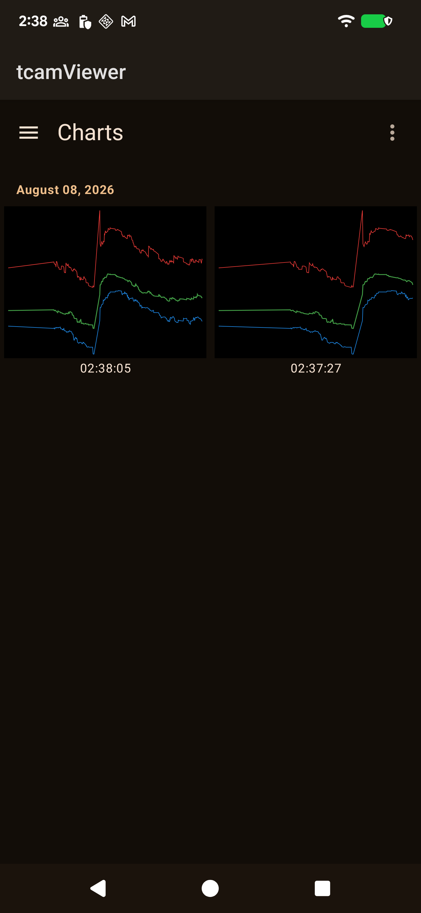

See the
heat, live.
tCam Viewer streams live radiometric thermal video from a tCam camera over your own Wi-Fi — spotmeter or region measurement, ten color palettes, recordings, time lapses, and rolling temperature charts, all decoded right on your device.

Color palettes
Switch live, mid-stream, without reconnecting to the camera — pick whichever mapping makes the heat easiest to read.
Built around one camera
Every screen is aimed at the same job: getting a clean read on temperature, fast, and keeping what you capture organized.

Drag a box, not a point
An alternative to the point spotmeter — resize a box over the frame and read its average, minimum, and maximum instead of one spot value.

Everything, grouped by date
Browse saved images, recordings, and time lapses together, filter by date range, multi-select, and delete straight from the grid.

A rolling chart, not just a number
Spot, max, and min plotted over the last five minutes — styled after desktop thermal tools, with real gridlines and a legend, saveable as a chart file.

Leaves with its context intact
Exports composite the image at 4× with the color bar, spotmeter marker, and gain/emissivity/timestamp baked in — not just a bare frame.

Saved histories, kept separately
Every chart you save gets its own screen — same grouped-by-date, multi-select, filterable browsing as the Library.
Reconnects on its own
If a connection drops mid-stream, the app retries the last known address, then falls back to mDNS in case DHCP handed the camera a new one.
Downloads
Requires Android 8.0 (API 26) or later, and a tCam camera on the same Wi-Fi network.
GitHub
Available nowThe same signed build published after every fix lands — updated in place, no store review to wait on.
Download APKGoogle Play
In reviewSigned app bundle built and compliance forms filed — the listing is currently awaiting Play Console review.
F-Droid
Metadata readyBuild recipe and store listing already live in this repo. The F-Droid build carries zero network code at all — not just telemetry switched off.
This app only talks to your camera, on your own Wi-Fi network. No account, no ads, no analytics — full details in the privacy policy.